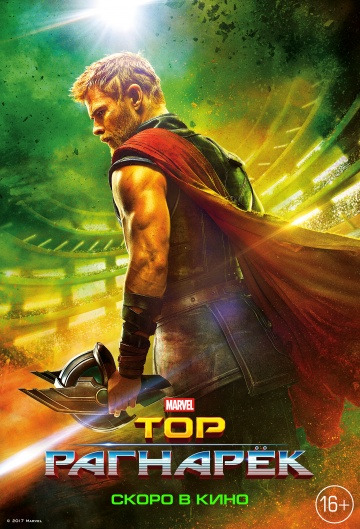

- Премьеры
- Биографии
- Боевики
- Вестерны
- Военые
- Детективы
- Детские
- Документ
- Драмы
- Исторические
- Комедии
- Криминал
- Мелодраммы
- Мультфильмы
- Мюзиклы
- Отечественые
- Приключения
- Семейные
- Спортивные
- Трилеры
- Ужасы
- Фантастика
- Фэнтези
- Фильмы в HD
- Мобильная версия
Категории
- 2016 года
- 2017 года
- 2018 года
- 2019 года
- Амерканские
- Британские
- Российские
- Индийские
- Немецкие
- Французкие
Сериалы
- Русские
- Зарубежные
- Турецкие
- Все сериалы
По году
По странам
Также смотрите
Веном

Блад Шот
Конченная

Гарри Поттер
Тор:Рагнарёк

Достать ножи
Блуждающая земля(2019)

В ближайшем будущем становится известно, что Солнце скоро погаснет, что разрушит Солнечную систему. Тогда человечество запускает масштабный проект под названием «Блуждающая Земля», цель которого - с помощью огромных двигателей по всему миру сдвинуть Землю и полететь искать новое пристанище. Через 17 лет путешествия земляне приближаются к Юпитеру. Гравитация гигантской планеты меняет траекторию Земли, вызывает глобальные землетрясения и ставит под угрозу весь проект по...
Название: Liu lang di qiu
Год выпуска: 2019
Страна:Китай
Жанр: Боевики/Фантастика/2019 года
Продолжительность: 125 мин. / 02:05
Люди в чёрном:Интерншл(2019)

Люди в черном, тайная организация на страже покоя и безопасности Земли, уже не раз защищали нас от нападения отбросов Вселенной. На этот раз самая большая опасность для мирового сообщества, которой агентам предстоит противостоять - шпион в их рядах. .Смотреть онлайн Люди в черном: Интернэшнл (2019) в хорошем качестве бесплатно...
Название: Men in Black International
Год выпуска: 2019
Страна:США
Жанр: Боевики/Комедии/Приключения/Фантастика/2019 года/Амерканские
Перевод: Дублированный
Продолжительность: 125 мин. / 02:05
Премьера (РФ): 12 июня 2019, «WDSSPR»
Призрак(2015)
Еще вчера Юрий Гордеев - амбициозный авиаконструктор и любимец женщин - был в шаге от своего триумфа. Его самолет ЮГ-1 должен был стать настоящим прорывом в отечественной авиации. Но сегодня его никто не видит и не слышит, и конкурент по бизнесу беспрепятственно закрывает его компанию. Все потому, что Юра разбился в автокатастрофе и стал призраком. Школьник Ваня Кузнецов был пустым местом всегда. Жертва гиперопеки матери, объект насмешек одноклассников, он боится даже...
Название: Men in Black International
Год выпуска: 2015
Страна:Россия
Жанр: Драмы/Комедии/Семейные/Фантастика/2015 года/Российские
Продолжительность: 114 мин. / 01:54
Премьера (РФ): 26 марта 2015, «Наше Кино